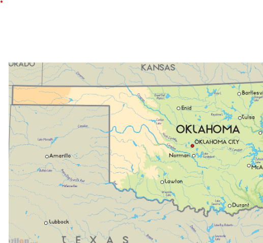

About Mathew A
About Me | Schedule | Fanpage
My full name is Mathew Adam Alvarez, it is pronounced just as spelt. What's funny is that my name is spelled incorrectly, it's supposed to be spelt Matthew, but there were some difficulties
My favorite thing to do in school is hangout with my girlfriend, she makes the time pass by way faster and we both keep each other on track to do better. Besides that I find 7th period to be my favorite class due to the reason that its nowhere near as boring as my other classes.
My favorite thing to do outside of school is again, spend time with my girlfriend Jessica. I also like doing other things like listen to music, everyonce in a while play ball or simply just spending time with my mom.
Here are a couple songs I have on my playlist
- No step - RunItUpJaybo
- #freeme - EBK Jaaybo
- Laylow - Yaxk5ive Ft. T2
- Nani Flow - Buss4Nani
The grade I'm working towards this class in an A, lowest B. I enjoy coding and I find this very interesting, if I'm doing something I like, for sure will try my hardest. A job like this in the future would for sure settle me. Don't mind to much of the pay just doing something i like suits me.

My favorite place that I have went to was for my birthday in August of 2020, I had went to Six Flags with my mom, cousin & brother. That is the only place I have went outside of Bakersfield, we are not the richest but we do what we can when possible.

There's a couple places I want to go, here's a list I hope to go to some day.
| Places |
Picture |
| Oaklahoma |
 |
| Las Vegas |
 |
| Niagara Falls |
 |
My favorite sport is basket ball. I don't play for a team or at school but on my own time I'd like to shoot some hoops. I like playing black jack with my brother, not to much and we just play for fun. I do spend quite good time on video games like Fortnite, Minecraft, & sometimes I'll play roblox with my little brother and girlfriend. Although I'm not the best at gaming its still a fun way to pass time for me.
Something I'd wanna be when I grow up is and architect. I love the idea of modeling a house and see it being built and the whole process in real time. If the wouldn't work out I'd try to get a job in constuction or a tech of some sort, I want something I wouldn't get board of and enjoy doing.